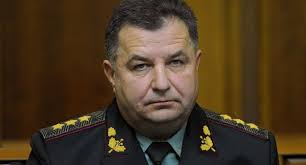

Agregó que una serie de demandas provendrá de las empresas que sufrieron pérdidas a raíz de la reincorporación de Crimea a Rusia.
Crimea y Sebastopol, ciudad con estatus especial situada en la península, pasaron a ser regiones de Rusia en marzo de 2014 tras un referendo en que la aplastante mayoría de sus habitantes votó a favor de la reincorporación a Rusia.
Moscú subraya que la celebración del referendo en Crimea se corresponde con las normas del derecho internacional y los estatutos de la ONU, pero Kiev sigue considerando Crimea parte de Ucrania